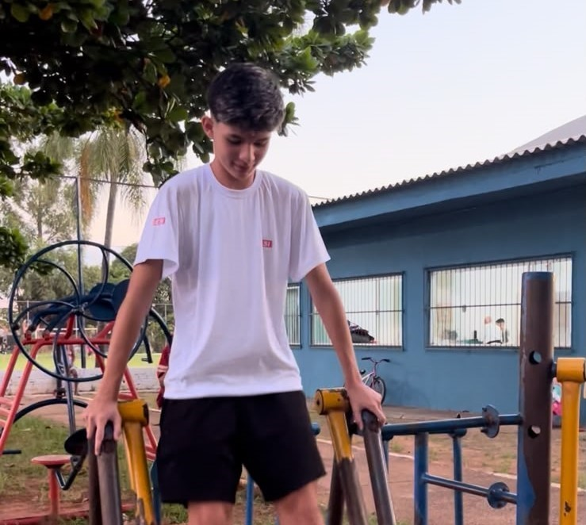
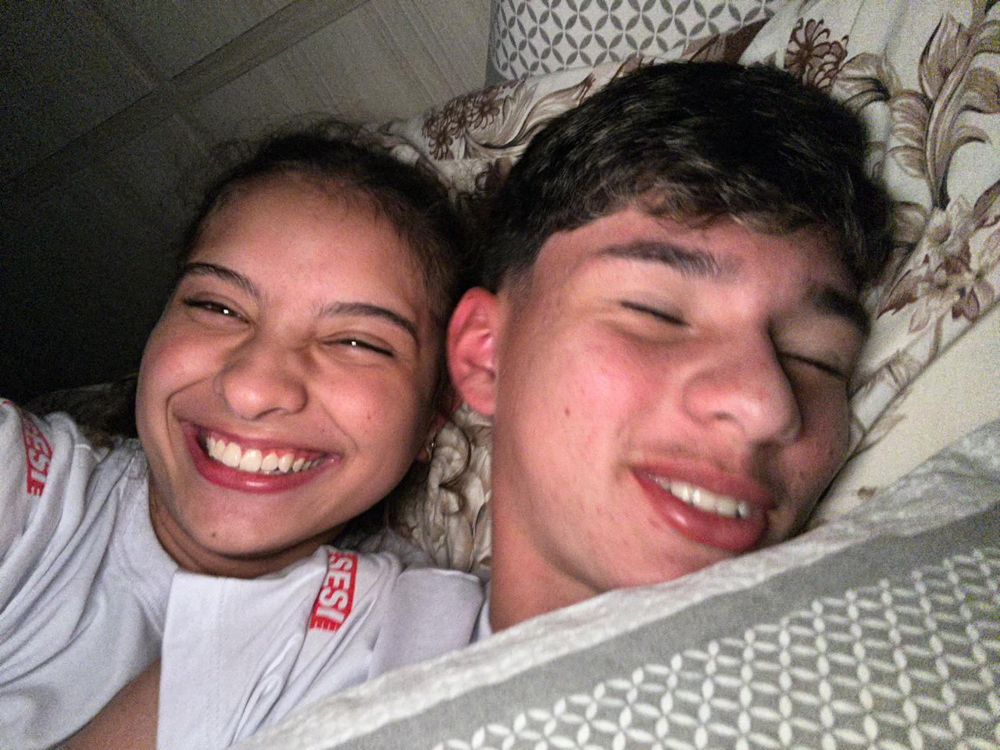
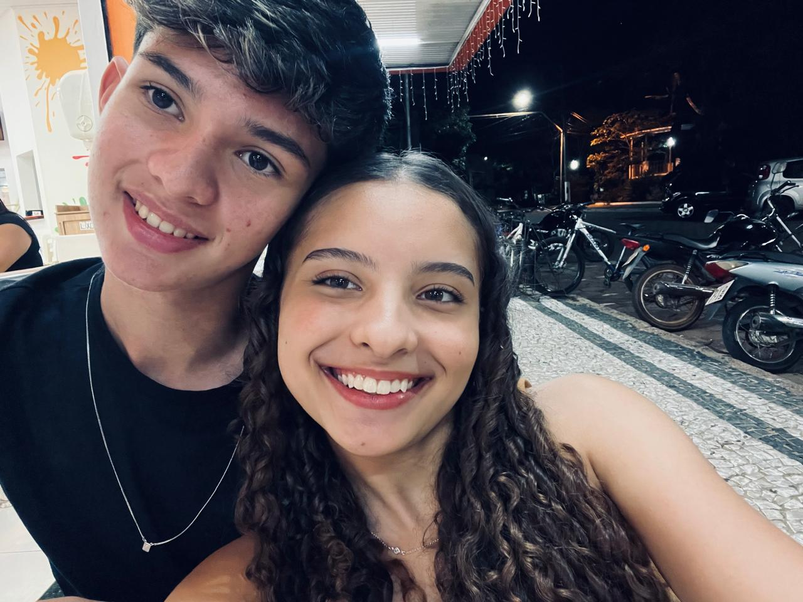
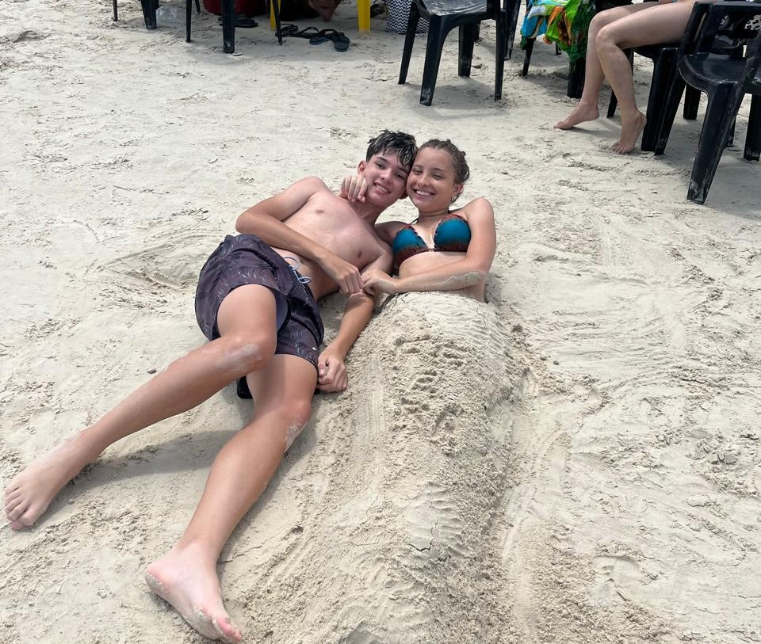
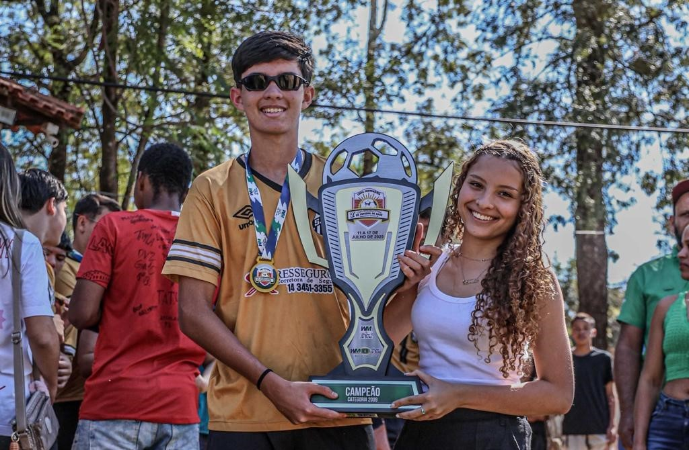
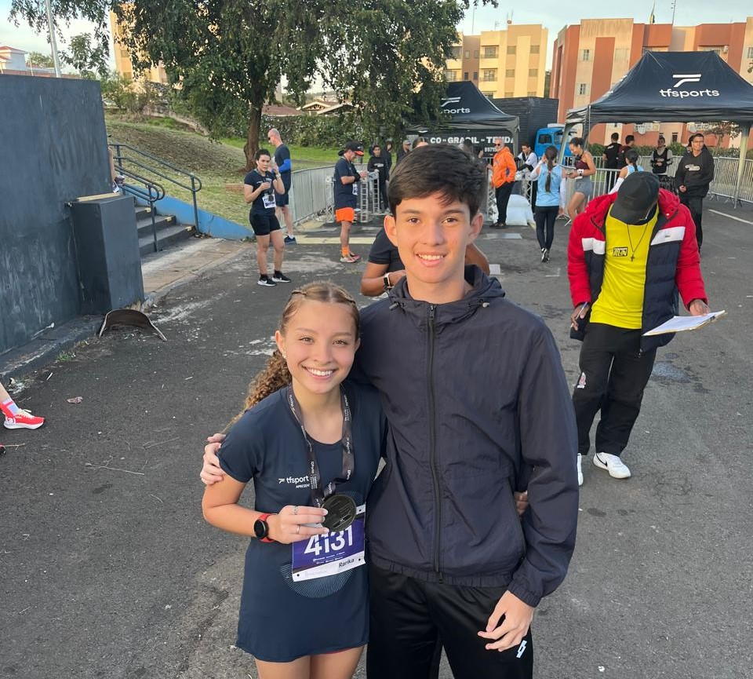

Destaques da Temporada
Abaixo estão listados os episódios e produções mais bem avaliados da nossa história.

1080p 30/04/2024O Arco de Introdução
O episódio piloto que deu início a tudo. O dia do nosso memorável primeiro encontro, onde as peças começaram a se encaixar perfeitamente.

Especial 29/05/2024O Dia em que Rimos Até a Barriga Doer
Neste ponto da história, o enredo ganha força total. O início oficial do nosso namoro recheado de piadas internas, conforto instantâneo e gargalhadas sinceras.

Clímax 12/06/2024As Três Palavras, Oito Letras
O divisor de águas definitivo. Quando o sentimento transbordou e o primeiro "Eu Te Amo" foi dito em voz alta, destravando um nível totalmente novo de conexão, cumplicidade e carinho entre nós dois.

Filme 14/11/2024Nossa Primeira Viagem Juntos
Disponível em Ultra HD. Uma produção de tirar o fôlego fora dos cenários habituais. Consolidação absoluta do arco "O Para Sempre" com paisagens lindas e companheirismo sem igual.

HD 16/07/2025O Arco do Título: Grito de Campeão
O emocionante arco esportivo da história! Muito suor em campo, raça a cada minuto e o apito final consagrando a vitória. O momento inesquecível de levantar a taça e comemorar o título de campeão.

1080p 03/08/2025A Primeira Corrida Juntos
Um episódio focado em ritmo, foco e superação de limites. Cada quilômetro vencido e cada linha de chegada ultrapassada deixam claro que, correndo com seu apoio, consigo ir muito mais longe.